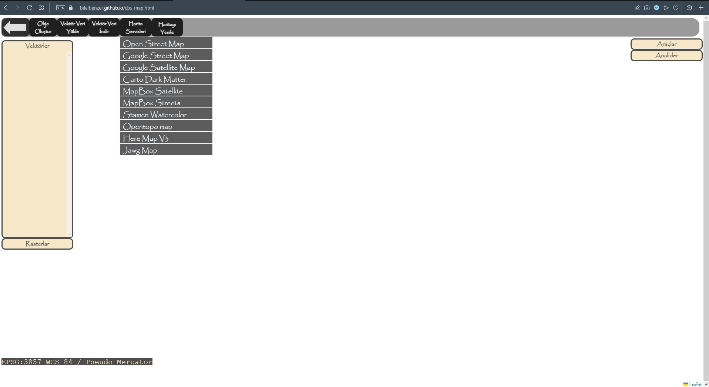

- 18.08.2022-Geotiff Addition Added. Improvements will continue.
- 16.08.2022-English Language Has Been Placed on the Website as a Second Language
- 16.08.2022-English Language Option Added to the Website and Translations Started
- 13.08.2022-Exporting .geojson file is completed. Shapefile export is in progress.
- 11.08.2022-The process of importing .shp and .kml file types from outside has been completed. Improvements for Other File Types are in progress.
- 09.08.2022-Processes related to polygon have been completed. Vector data loading processes started
- 03.08.2022-Processes Related to Drawing Polygons Started
- 01.08.2022-Processes Related to Polyline Completed. Feature Improvements Will Continue.
- 29.07.2022-Multiline Drawing, Show-Hide on Map, Edit Layer(delete corner point, Add Waypoint and Shiftw) Improved
- 26.07.2022-Developments for Polyline Started
- 25.07.2022-Processes Related to Multipoint Layer Complete
- 07.07.2022-Setting Url and Local Icons as Object Style in Multipoint Layer Completed. Changing Icon Sizes in Development
- 04.07.2022-Classification by Attribute Color and Size in Multipoint Layer Completed
- 29.06.2022-Operations Related to Attribute Table in Multipoint Layer (Adding Attributes, Editing, Deleting, Adding Columns, Editing) Completed
- 27.06.2022-Displaying the Attribute Table in Multi-Point Layer, Adding/Deleting Columns and Attributes/Seeing Features Started
- 24.06.2022-Deletion of Selected Points in Multipoint Layer Completed
- 20.06.2022-Point Moving Function Completed By Manually Entering Coordinates In Multi-Point Layer
- 20.06.2022-Mouse Point Move Function Completed in Multi Point layer
- 17.06.2022-Fixes and Improvements Made for Multipoint
- 06.06.2022-Editing Function By Entering Coordinates in Editing Point Object Has Been Updated
- 15.06.2022-The Feature of Editing by Selecting Objects on the Map for Multiple Points Has Begun to be Improved.
- 15.06.2022-Creating Multipoint Object, Hiding on Map, Showing, Zooming Completed
- 20.05.2022-Different Coordination Systems were Integrated. Improvements Will Continue...
- 25.04.2022-Point Object Can Be Added, Edited, Symbolized, Attributes Can Be Added
- 03.03.2022-Map Services Made Available
- 01.03.2022-Web Design Started
